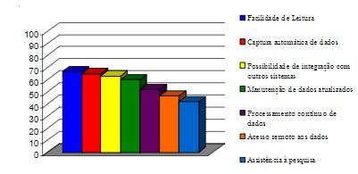

Mesmo com o grande avanço da tecnologia na área da saúde, algumas coisas ainda continuam um pouco desatualizadas, como seria o caso de prontuários médicos.Pelo fato dos prontuários médicos ainda não serem digitais na grande parte dos hospitais, alguns pacientes correm o risco de ter o seu histórico da consulta perdido, levando ao atraso do diagnóstico. Isso também prejudica no ganho de tempo e sustentabilidade, já que os prontuários que chegam para subir para bancos de informações, muitas vezes são digitalizados e, consequentemente, os prontuários em papel são descartados.
O código desenvolvido implementa um sistema de prontuário eletrônico para cadastro de paciente e visualização do prontuário.
O gráfico a seguir aponta as vantagens por optar pelo prontuário eletrônico segundo uma entrevista.
